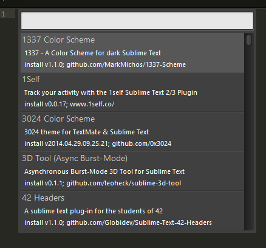
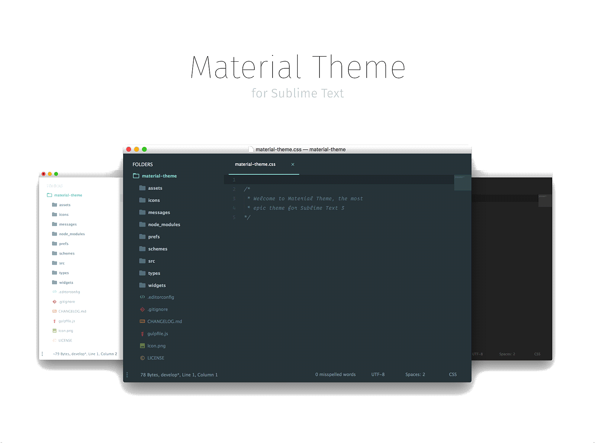
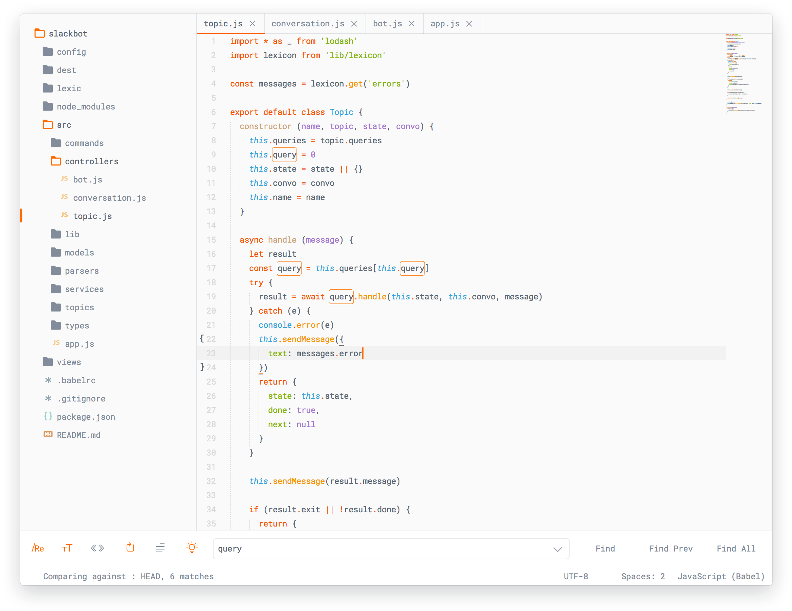
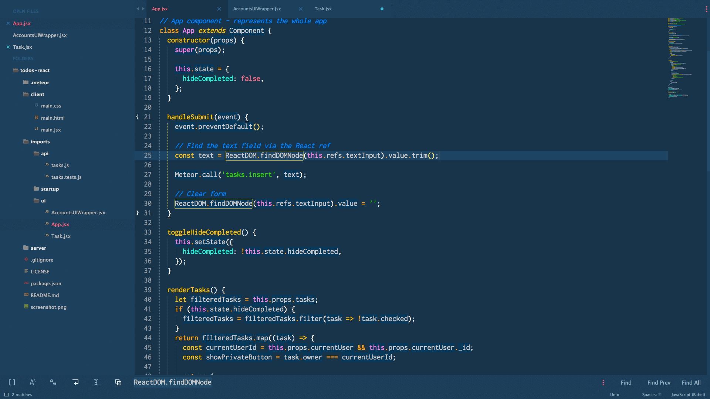

这篇博客主要讲怎么配置自己的sublime text， 安装可以去官网下载自行安装。
Package Control
之后我们要安装Package Control, 既sublime的包管理工具 后面我们的包下载安装都用他。
按快捷键ctrl + ` 调出或者菜单view> show Control 调出control
复制下面代码到control
sublime Text 3
sublime Text 2
复制完敲回车就可以安装，稍等片刻出现即可，安装完成后在 Preferences菜单下会出现 Package Control 选项
详细安装可看Package Control
插件
打开 Package Control或按快捷键cmd/ctrl + shift + p， 输入 install package 选中第一个选项既进入安装插件的列表。
这时候可能需要等一会加载远程仓库，具体在左下角会有一个loading标识， 加载完在弹窗输入要安装的插件即可。

所有的插件都可以在https://packagecontrol.io/ 找到，下面列出比较常用的几个插件
Theme
sublime 编辑器虽然轻巧强大，但是默认的主题实在有点看不下去。
主题可以在https://packagecontrol.io/browse/labels/theme 找自己喜欢的。
目前个人使用的是 Material Theme 。
直接在install package 弹窗输入 Material Theme 选第一个即可（后面安装方法类似）。
安装完成后会弹出一个README，根据提示修改一下配置。
打开Preferences > settings > User
添加以下配置，保存即可生效
Material Theme

个人比较喜欢的主题还有
ayu

Agila Theme

Emmet
前端工程师使用sublime编辑的必备插件，可以极大提高开发效率。
最简单的应用就是在空白的.html页面输入!再按 tab键会自动生成html5基本页面解构。
还有基本如 #div1>span.child{这是子级}*2+button.name[disabled]{按钮}快捷语法等
具体看emmet, Emmet-package
SideBarEnhancements
sublime 自带的侧边栏文件（夹）功能特别少，这个插件可以为其添加很多其他功能。docs
BracketHighlighter
前后标签高亮的插件，如[], (), {}, "", '', <tag></tag>等，可以比较方便看清代码块的起始点。docs
AutoFileName
按照路径提示该路径目录下的文件名，对于引入文件资源等很有帮助
All AutoComplete
让代码自动完成的匹配从所有打开的文件里去匹配，而不是只在当前文件里匹配。
HTML-CSS-JS Prettify
html, css, js && Json 的格式化插件。需要本地安装了node。
默认格式化快捷键为ctrl+shift+h
END
基本上比较通用的插件就这些，可以发现这些插件基本上都在package Control前十位。
学会举一反三，工作中用到的另一些插件再上https://packagecontrol.io/ 搜索关键字安装
如 git, less, vuejs等等。
最后附上自己的配置